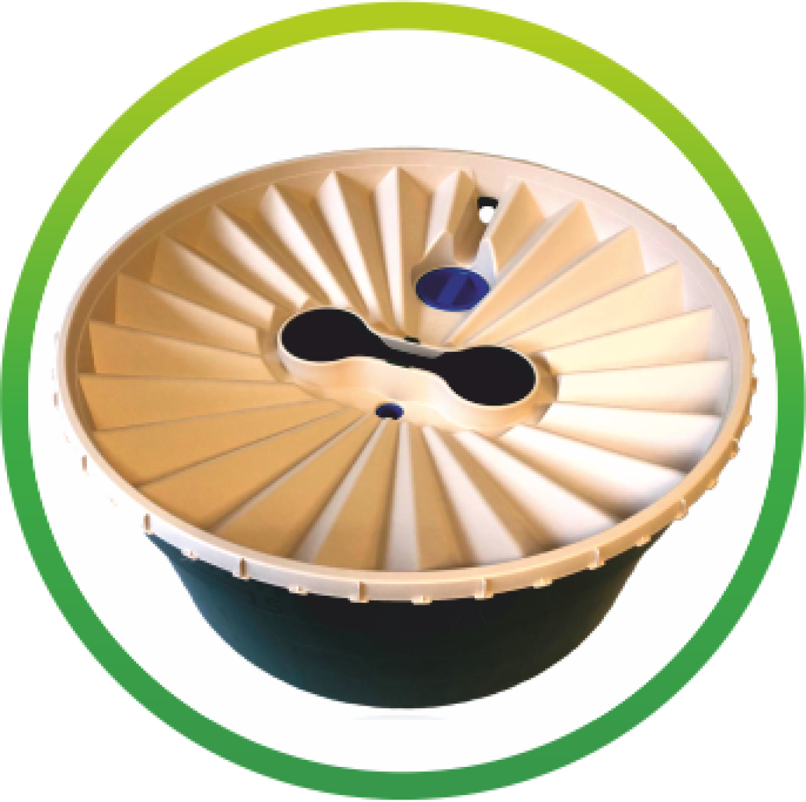
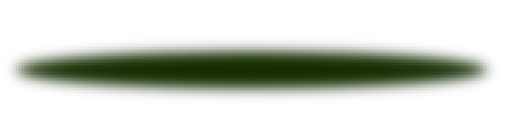
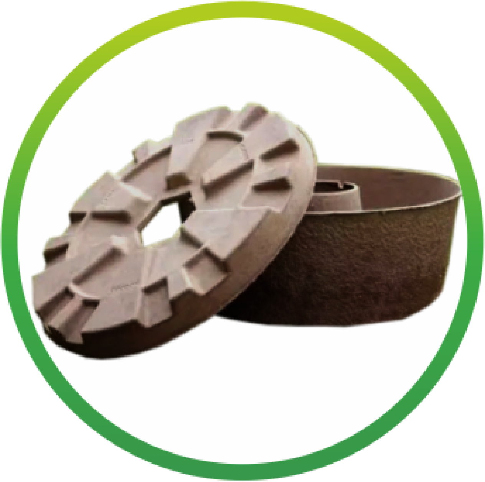
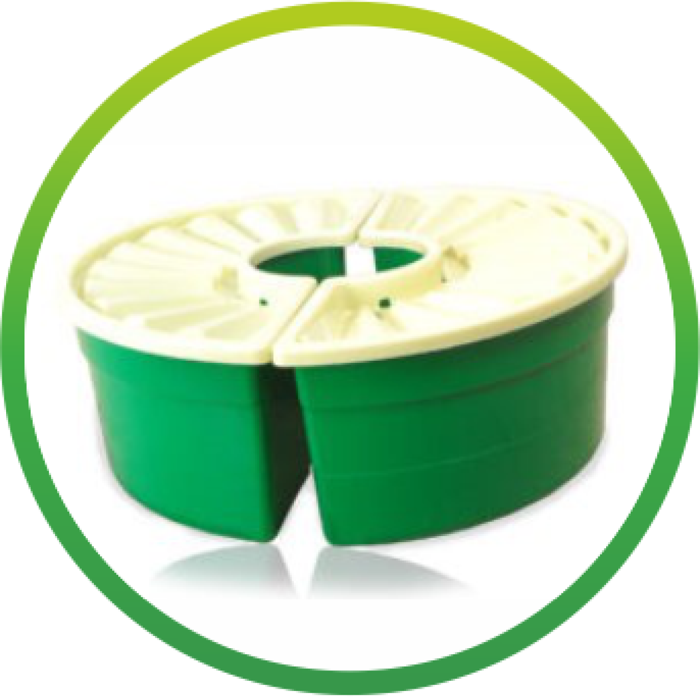
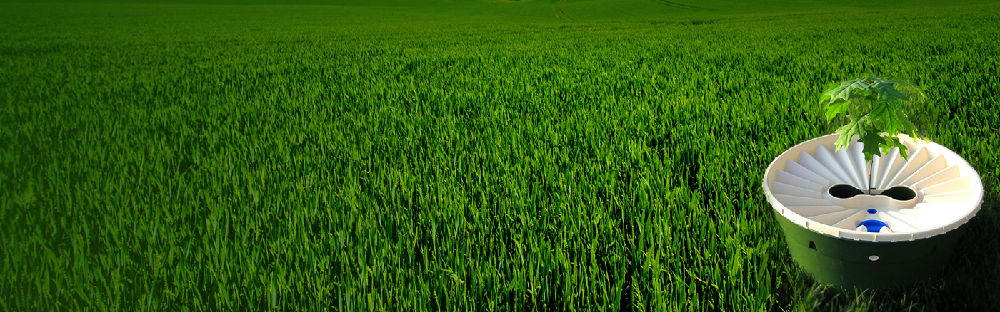
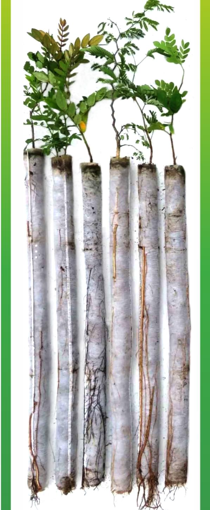
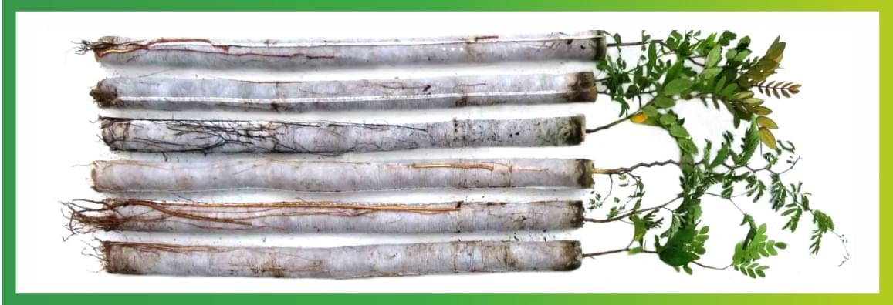

уникальная технология выращивания деревьев на засушливых территориях без полива
90% ВЫЖИВАНИЯ САЖЕНЦЕВ
90% ЭКОНОМИИ ВОДЫ
90% ЭКОНОМИИ ДЕНЕГ
НЕ ИМЕЕТ АНАЛОГОВ В РОССИИ!
#


древорост СТАНДАРТ

древорост ЭКО

древорост СПЛИТ
Древорост - это уникальная, запатентованная, не имеющая аналогов в России технология выращивания растений в засушливых районах.
Уникальность технологии Древорост в том, что после посадки растений не требуется дальнейший полив и уход, в тоже время выживаемость составляет до 90% саженцев!
Отказ от дальнейшего ухаживания и полива позволяет экономить до 90% средств, а так же до 90% воды, необходимой для выращивания растений.
ПРЕИМУЩЕСТВА
Глубокая закрытая корневая система саженца до 100 см
Не поврежден главный корень растения при посадке
Устойчивость к засухе и морозам
Быстрый рост после посадки
Не требует полива после посадки

Технология состоит из 2-х этапов.
Выращивание саженцев.


Саженцы Древорост выращиваются с закрытой корневой системой в стаканах высотой до 1 метра.
В процессе прорастания формируется глубокий, мощный главный стержневой корень, который не загибается при росте в стаканах (что происходит с обычной технологией с закрытой корневой системой) и не обрубается при пересадке (при открытой корневой системе).
Саженцы Древорост легко транспортируются в горизонтальном положении на дальние расстояния.
Высадка саженцев возможна через 3-4 месяца.
Формирование такой корневой системы имеет преимущества перед традиционными способами:
Из-за длинного глубокого корня саженцы не вымерзают и не высыхают.
После высадки главный корень растения продолжает расти вглубь, добираясь до капиллярной воды, достаточной для роста растения. Активно формируются вторичные боковые корни. Если сажать растения с согнутым или обрубленным корнем, то формируется поверхностная корневая система, требующая полива.
Растение с глубоким корнем после высадки не конкурирует с сорными травами за питательные вещества.
Высадка саженцев.
Высадка саженцев осуществляется в узкие глубокие лунки.
Сверху устанавливается один из вариантов горшка Древорост, который тоже погружается в землю на 25-30см и наполняется водой.
Количество воды достаточно, чтобы питать саженец в течение 40-60 дней.
В дальнейшем вода в горшке пополняется от дождей и росы. Это экономит до 90% воды, необходимой для полива растений.
Количество поступающей воды достаточно, чтобы растение не засохло, но не достаточно для полноценного полива, что стимулирует растение развивать корневую систему. В дальнейшем необходимость в горшке Древорост отпадает.
Горшок Древорост препятствует перегреву и высыханию почвы вокруг растения, так же не дает сорнякам расти близко к саженцу, защищает саженец он перегрева и вымерзания, от ветра и животных.